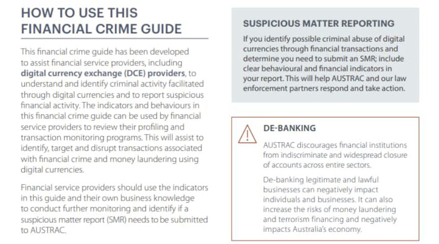
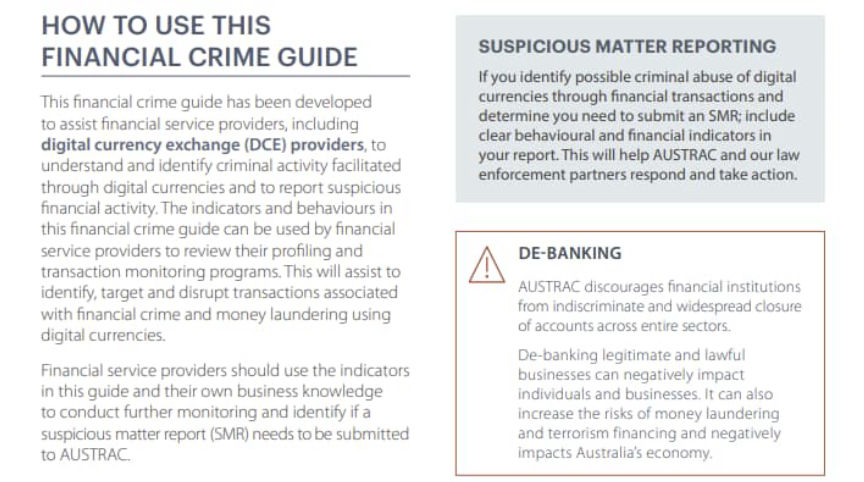

Encrypted Messaging App Signal Might Be Banned in China
~2 min read | Published on 2021-03-16, tagged General-News, Signal using 292 words.
Signal, the encrypted messaging application used by millions, appears to be the latest target of the censorship wing of the Chinese government.
Signal is popular in many circles as one of the last few mainstream platforms for uncensored, end-to-end encrypted, and private conversations. Among its 40 million users are drug dealers and their customers, any privacy-conscious individual, Americans expressing “wrong” opinions, and apparently hundreds of thousands of people living in China for perhaps some of the same reasons.
Per Reuters:
China’s cyber authorities have become increasingly strict in recent years, widening the scope of apps, media outlets and social media sites banned in the country.
Signal’s website was also inaccessible in China on Tuesday morning.
The app was still available on Apple’s China app store as of Tuesday morning, and the app and website appeared to be working normally in Hong Kong.
Signal’s press team did not immediately respond to a request for comment.
The Cyberspace Administration of China could not immediately be reached for comment.
The app was already unavailable on third-party Android stores in China, where Google services are largely blocked.
On several occasions the app had previously stopped working in China without VPN with no reason given, only for usage to resume.
Signal saw a surge in downloads worldwide after January 6 when WhatsApp updated its privacy terms, reserving the right to share user data, including location and phone number, with its parent Facebook Inc and units such as Instagram and Messenger.
Signal had been downloaded close to 510,000 times on iOS in China, and has been downloaded 100 million times worldwide on the App Store and Google Play combined, according to data company Sensor Tower.
Tencent’s all-in-one mobile app WeChat is China’s dominant messaging app, with its payment functions and other services, boasts more than a billion users globally.

Signal is popular in many circles as one of the last few mainstream platforms for uncensored, end-to-end encrypted, and private conversations. Among its 40 million users are drug dealers and their customers, any privacy-conscious individual, Americans expressing “wrong” opinions, and apparently hundreds of thousands of people living in China for perhaps some of the same reasons.
Per Reuters:
China’s cyber authorities have become increasingly strict in recent years, widening the scope of apps, media outlets and social media sites banned in the country.
Signal’s website was also inaccessible in China on Tuesday morning.
The app was still available on Apple’s China app store as of Tuesday morning, and the app and website appeared to be working normally in Hong Kong.
Signal’s press team did not immediately respond to a request for comment.
The Cyberspace Administration of China could not immediately be reached for comment.
The app was already unavailable on third-party Android stores in China, where Google services are largely blocked.
On several occasions the app had previously stopped working in China without VPN with no reason given, only for usage to resume.
Signal saw a surge in downloads worldwide after January 6 when WhatsApp updated its privacy terms, reserving the right to share user data, including location and phone number, with its parent Facebook Inc and units such as Instagram and Messenger.
Signal had been downloaded close to 510,000 times on iOS in China, and has been downloaded 100 million times worldwide on the App Store and Google Play combined, according to data company Sensor Tower.
Tencent’s all-in-one mobile app WeChat is China’s dominant messaging app, with its payment functions and other services, boasts more than a billion users globally.
